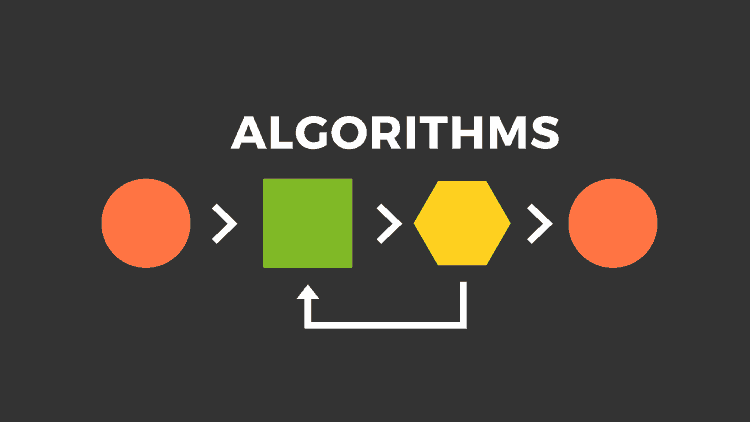

Postlar Sahifasi
Dasturlashni qanday qilib onlayn uyda o'rganish mumkin!
Buning yo'li juda ham oson, men sizga mohir dev platformasini taklif etaman! Ushbu sayt orqali dunyodagi eng keng tarqalayotgan
dasturlash tillarini o'rganishingiz mumkin.
Link
Link

Algoritm Nima?
Algoritm bu ma’lum bir vazifani bajarishga qaratilgan kichik dastur. Algoritm tushunchasini kengroq qilib tushintirganda, berilgan masalani yechish uchun ketma-ketliklar majmuasidir.
Algoritmni hayotimizda juda ko’p sohalarda ishlatiladi: chorraxada svetafor, binolarda lift. Hattoki o’zimiz oddiy hayotiy ishlarda ham
algoritm ishlatamiz: choynakga choy damlash. Algoritmlarning komputer sohasida ham muhim ro’l o’ynaydi. Chunki, dasturchi yozgan dasturlar hammasi
ma’lum bir ketma-ketlik bilan ishlaydi.